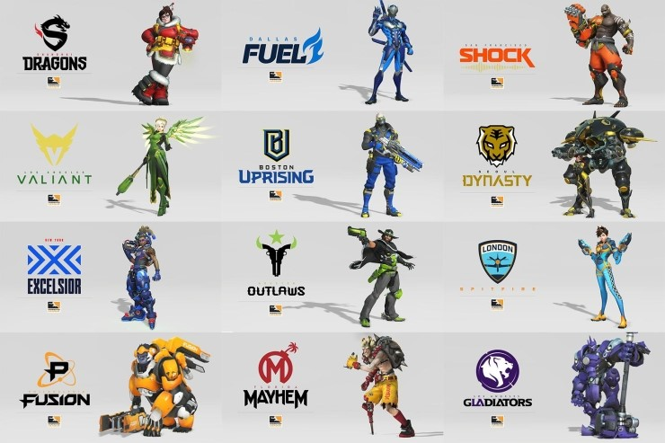
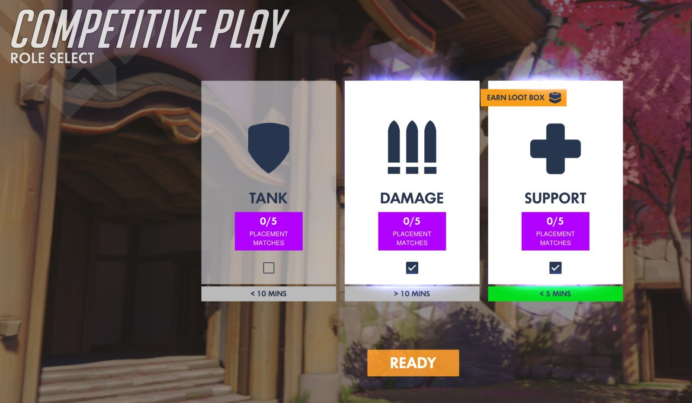

Overwatch is a team-based first person shooter created by Blizzard Entertainment, creators of famous titles such as World of Warcraft and Starcraft II, and publishe by Activision. The game was announced on November 2, 2014 but wasn't released until May 22, 2016. At it's launch, the game received a lot of praise for it's gameplay, mechanics, and unique spin on the hero shooter genre. The game sees the player playing as one of 31 different characters, all fitting into three different categories and having unique abilities, work with a team of five other people to complete various objectives. These objectives range from capturing control points to escorting a cart across a map. It's up to your team to decided who they want to approach it based on what characters they choose to do the job. All characters are seperated into different categories, each vital to a team's success:

Overwatch's Esports scene was already a thing before the game even released. People who were fortunate enough to get into the close alpha and beta sessions, as well as internet personalities and former Team Fortress 2 and CS:GO professional players were able to play the game behind closed doors. The Overwatch Esports scene didn't kick off until after the game launched. Various teams backed by Esports orgs competed in tournaments such as MLG Vegas and Alienware's Monthly Melee. At Blizzcon 2016, Blizzard unveiled their next step in Overwatch Esports, The Overwatch League. Esports orgs began bidding wars for the 12 spots available. Surprisingly, New England Patroits owner, Robert Kraft, secured a Boston spot. Before the League went into motion in 2018, a large tournament was held in Korea known as OGN APEX. This was the first and only Tournament at the time where Western and Korean talent would meet.

The league officially kicked off in January of 2018, and had a rather strong showing during it's first few days. It was the rekindling of old Esports rivarlries, such as Lunatic-Hai vs Team Envyus, now the Seoul Dynasty and Dallas Fuel respectively, and new ones, such as the Los Angeles Valiant and Los Angeles Gladiators. However, every sports league, either traditional or Esports, wasn't without drama, and the Overwatch League was no stranger. The first half of Season 1 was full of drama, and it felt like every team had their share of problems. To player having meltdowns on Twitter to corrupt orgs, many started to loose faith in the league as a whole seeing it riddled with flaws like this. Luckily, a lot these problems were ironed out. In the end, there will always be drama, however. The season was pretty quiet until the annoucnement of the stage playoffs. The playoffs would be held at the Barklay's center in New York City, with DJ Khalid preforming. After the brutal playoff rounds, only two teams stood at the top: The London Spitfire and the Philadelphia Fusion. London won both sets, the first was a 3-1, and the second was a clean 3-0 sweep.
| Stage | Finalist | Winner | Final Score |
|---|---|---|---|
| Stage 1 | London Spitfire vs New York Excelsior | London Spitfire | LDN 3-1 NYXL |
| Stage 2 | Philadelphia Fusion vs New York Excelsior | New York Excelsior | NYXL 3-2 PHI | Stage 3 | Boston Uprising vs New York Excelsior | New York Excelsior | NYXL 3-1 BOS |
| Stage 4 | Los Angeles Valiant vs New York Excelsior | Los Angeles Valiant | LAV 3-1 NYXL | Season Finals | Philadelphia Fusion vs London Spitfire | London Spitfire | Set 1: LDN 3-1 PHI. Set 2: LDN 3-0 PHI |
Everyone knew that a second season for the Overwatch League was inevitable, especially after how much money Blizzard made from it. To compensate for a second season, and to try to maintain and grow their current viewership numbers, Blizzard opened up 8 more spots for season 2. Just like last time, investors buy these spots, then general managers to build up their teams. The eight teams to join the League for the 2019 season were the: Guangzhou Charge, Atlanta Reign, Hangzhou Spark, Chengdu Hunters, Toronto Defiant, Washington Justice, Vancouver Titans, and the Paris Eternal.

So why are you talking about goats all of the sudden? Don't worry, we aren't talking about the actual animal, but a team that made a composition that shook up the competitive scene for a year and two months. In May of 2018 during the BEAT Invitational tournament, we saw a team by the name of "GOATS" dominate the tournament with a composition that excluded Damage characters. The six man team ran a compostion of 3 tanks and 3 healers. Multi tank compositions in Overwatch were very common with mainly 3 and 4 tanks, but none were as effective as this composition. The team comp was as followed: Reinhardt, D.Va, Zarya, Moira, Lucio, and Brigitte. GOATS went on to win the tournament, and the comp that they've created was aptly named after them, or simply called 3-3. The reason why the composition was so strong was because it provided a lot of sustain for tanks, as well as mass amounts of damage reduction and health pools in one area. This meant that if the comp reached the point, it would be very hard to get them off of the objected. The pro community figured that if you can't beat em, join em.

As time went on, the comp had evolved and certain characters could be swapped out depending on the map, or simply due to some being superior to the others. For example, Winston was swapped out for Reinhardt with maps with a lot of high ground, Moira could be changed with Ana or Zenyatta due to their better utility, and lastly, D.Va could be swapped out for Sombra since she can disable targets. Despite a lot of this sounding very simple to do, GOATS is very difficult to pull off on ladder games, as it requires a lot of coordination to be successful. The general audience of the Overwatch League felt as if the comp had overstayed their welcome and didn't like how some players were benched since they weren't valuable in a GOATS meta, but were outside of it. A lot of teams found soft counters to the composition, such as triple dps comps, or even quad tank, but swapping onto GOATS was inevitable and messed up ult economies. Despite the various buffs and nerfs, GOATS remained relevant for 3 stages until Blizzard released and enforced a 2-2-2 role lock. This made it impossible to run GOATS ever again, and made sure that every team on pro and ladder, had 2 tanks, 2 supports, and 2 dps. The biggest pro of a role lock is that it made balancing and designing more characters a lot easier on the developer side.It helps create a much better product over time.
With Season 2 winding down, the battle for the grand finals commences. The Teams within the top 6 on the standings are guaranteed a spot in playoffs, while the teams in 7-12th place will have play ins. The grand finals is schedule to take place on September 29, 2019 at the Wells Fargo Center in Philadelphia, Pennsylvania. Right now, it's still up in the air on who can make it, especially since 2-2-2 is still new to Overwatch. Who do you think will win it all? All information regarding the league can be found here

| Stage | Finalist | Winner | Final Score |
|---|---|---|---|
| Stage 1 | Vancouver Titans vs San Francisco Shock | Vancouver Titans | VAN 4-3 SFS |
| Stage 2 | Vancouver Titans vs San Francisco Shock | San Francisco Shock | SFS 4-2 VAN |
| Stage 3 | Shanghai Dragons vs San Francisco Shock | Shanghai Dragons | SHD 4-3 SFS |